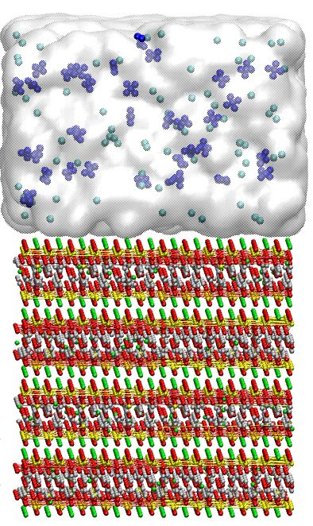
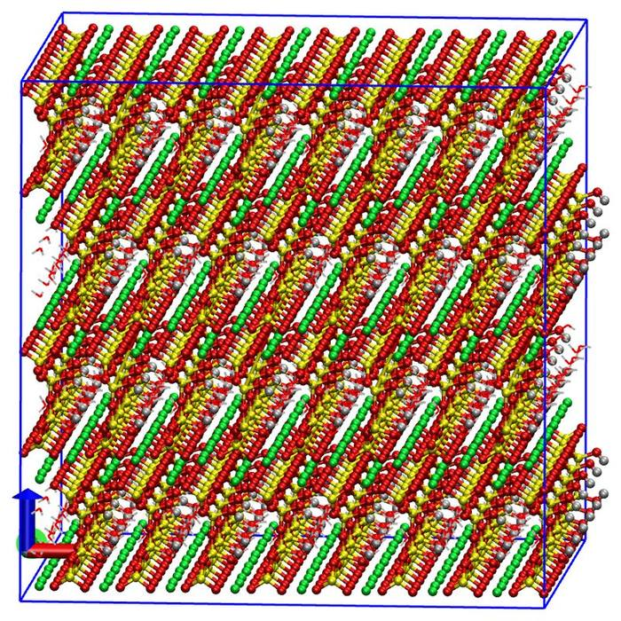
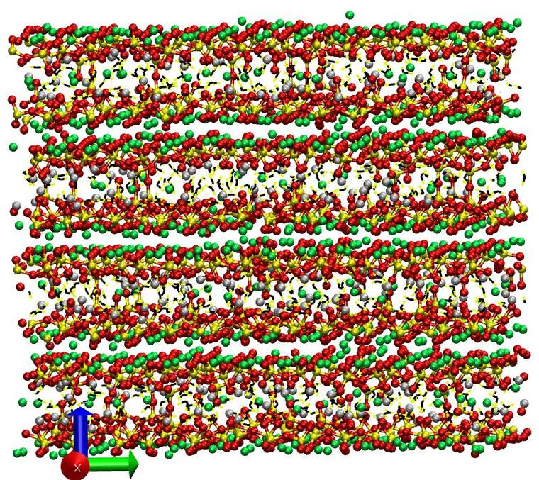
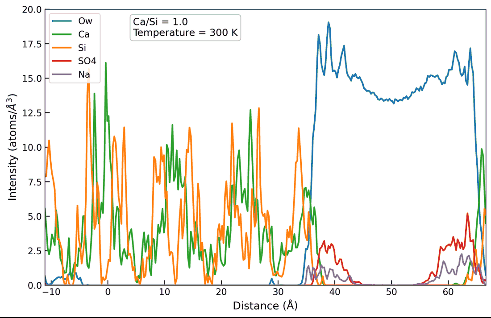
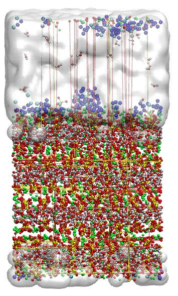
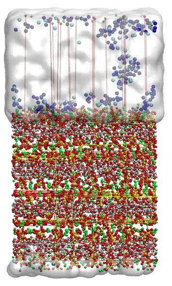
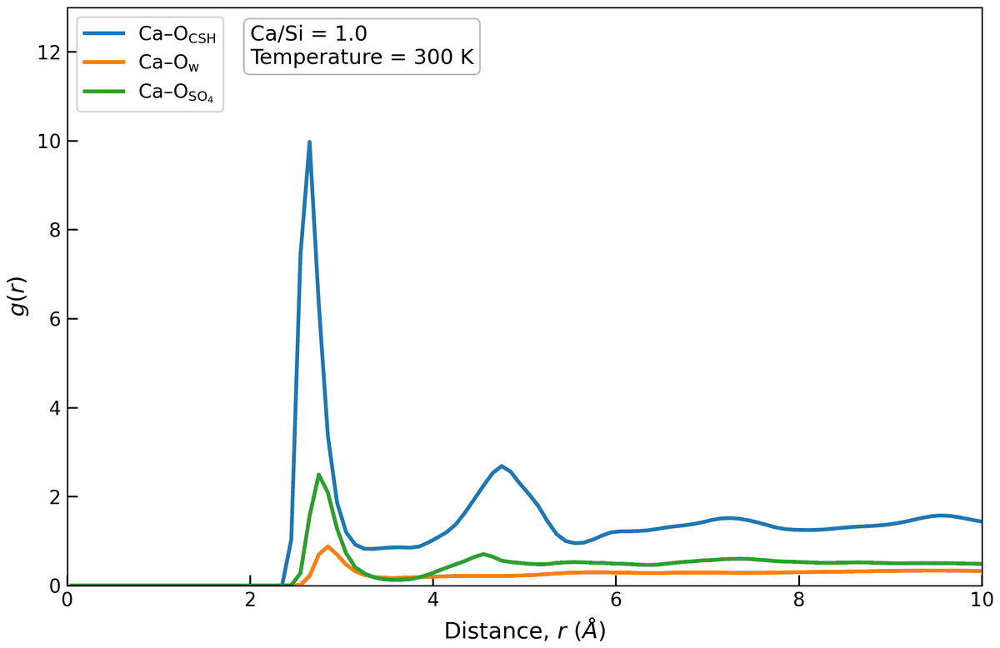

Sulfate ion transport in C-S-H nanopores
This molecular dynamics project investigated calcium leaching from C-S-H exposed to sodium sulfate solution, a process relevant to concrete durability in sulfate-bearing environments.
I constructed C-S-H models from 11 Å tobermorite at Ca/Si ratios of 1.0 and 1.3, with a 1 mol/L sodium sulfate solution in a pore approximately 3 nm wide. Simulations used the INTERFACE force field for C-S-H, CHARMM ion parameters and TIP3P water, with 15 ns runs at 300, 330 and 360 K.


Only a small number of calcium ions left the surface during the simulated time window, and no clear temperature trend emerged. The Ca/Si 1.3 model generally showed slightly more calcium leaching than the Ca/Si 1.0 model. Radial distribution functions indicated that most calcium remained coordinated with C-S-H oxygen; exposed calcium showed stronger association with sulfate oxygen than with water oxygen.

These observations are limited to the 15 ns simulations and the two Ca/Si ratios studied. Longer runs and a broader range of compositions would help assess whether the observed differences persist.
Additional figures











